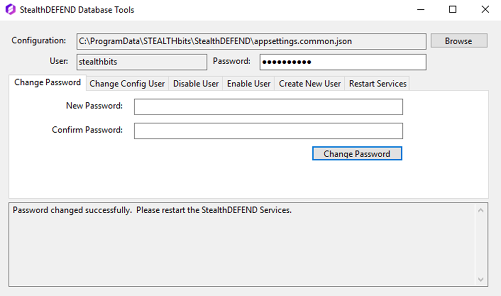
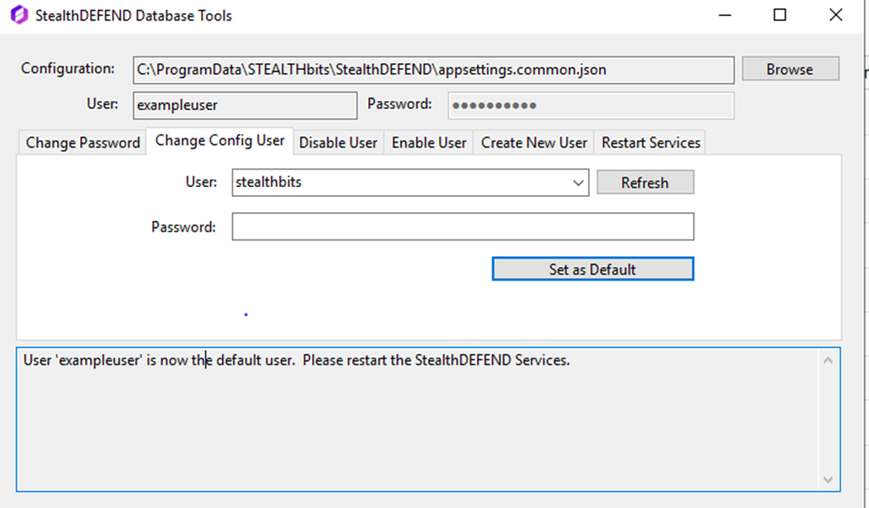
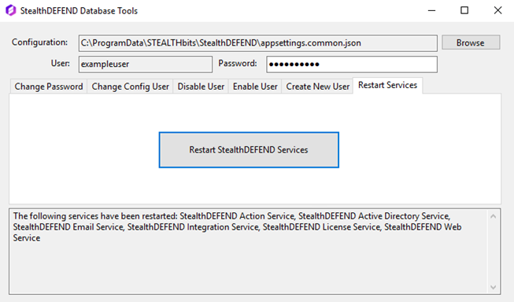

Issue: Prior to the creation of the database tool, it was not possible for Threat Manager users to change their default PostgreSQL password.
Prerequisites: .Net 5.0 required to use application, if it is not installed user will be prompted to install it.
Instructions:
- Download the StealthDEFEND_DatabaseTool
- Navigate to the “StealthDEFEND_DatabaseTool” folder
- Locate the “Threat Manager Database Tool.exe” executable file and run it
- Contact Netwrix support for the password to use the Database Tool
Changing a password
- Navigate to the “Change Password” tab
- Enter the new password
- Click “Change Password”
- Navigate to the “Restart Services” tab and click “Restart Threat Manager services” for your changes to take effect
Creating a new user
- Navigate to the “Create New User” tab
- Enter information for all fields
- Click “Create User”
Changing the config user
Note: The user drop down will be empty if no new users have been created
- Navigate to the “Change Config User” tab
- Select the user from the dropdown list that you would like to be the new config user.
- Enter the user’s password
- Click “Set as Default”
- Navigate to the “Restart Services” tab
- Click the “Restart Threat Manager Services” button
Disabling a user
Note: The user drop down will be empty if no new users have been created. This only shows enabled accounts that can be disabled.
- Navigate to the “Disable User” tab
- Select the user from the drop-down menu that you would like to disable
- Click “Disable User”
Enabling a user
Note: The user drop down will be empty if no users have been disabled. This only shows disabled accounts that can be re-enabled.
- Navigate to the “Enable User” tab
- Select the user from the drop-down menu that you would like to enable
- Click “Enable User”
Restarting Services
- Navigate to the “Restart Services” tab
- Click “Restart StealthDEFEND Services”
- Allow a minute for the services to restart
